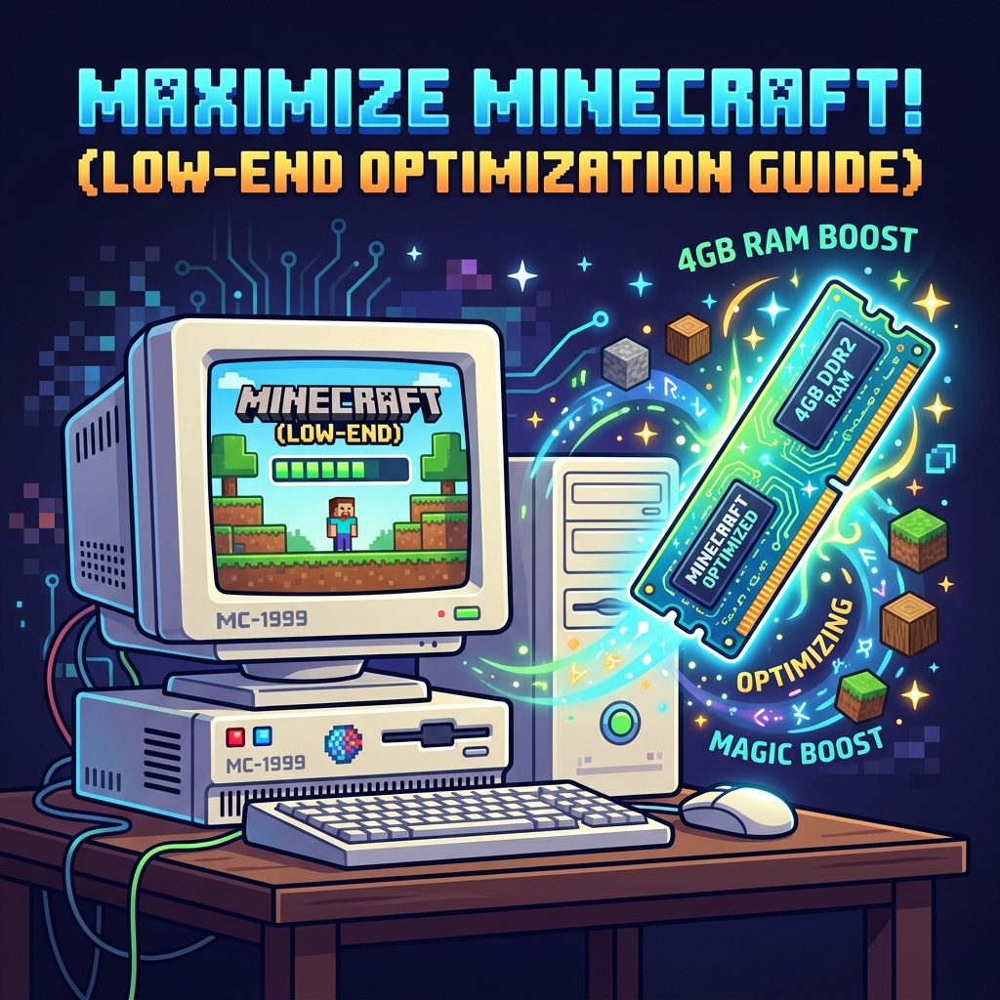

Categoría: Rendimiento
Los 5 Mods Clave para revivir una PC de 4GB de RAM en 2026
LFZ Team
•
10 de Agosto, 2026

Jugar Minecraft a 60 FPS sin una PC Gamer es posible
No todos tienen el presupuesto para una tarjeta gráfica dedicada o 32GB de RAM. Afortunadamente, la comunidad de modding ha creado maravillas que optimizan el juego mucho mejor que Mojang. Aquí tienes el "Santo Grial" de los mods de rendimiento para Fabric.
El Combo Definitivo (Instálalos juntos)
- Sodium: Cambia todo el motor de renderizado del juego. Multiplica tus FPS.
- Lithium: Optimiza la "física" interna (lógica del servidor, inteligencia artificial de los mobs, colisiones).
- FerriteCore: Reduce drásticamente el consumo de Memoria RAM. Ideal si tienes 4GB.
- Entity Culling: Oculta (deja de renderizar) cofres, mobs y carteles que están detrás de paredes o montañas, ahorrando valiosos recursos de tu tarjeta gráfica.
- LazyDFU: Hace que el juego abra en la mitad del tiempo eliminando tareas de fondo innecesarias en la pantalla de carga.
¿Cómo instalarlos?
En el LFZ Launcher, crea una instancia de Fabric. Luego, entra a "Editar Instancia" -> "Bajar Mods", busca los nombres de esta lista y dale al botón de Instalar. ¡Entra a tu mundo y nota la diferencia!